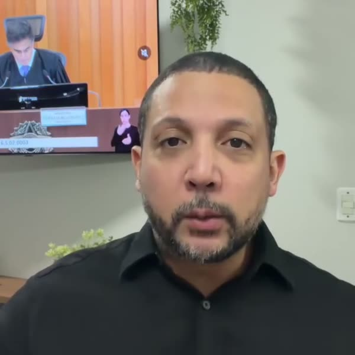

Vídeo
“Eu reuni tudo em um único material”
O Murilo apresenta tudo o que vem no Manual, item por item, e fecha com o preço.
VIDEO_AD01
Prof. Murilo Soares · Manual do Prequestionamento no RR
Vídeos para os anúncios do Manual, cada um em dois formatos: feed (quadrado) e story (vertical). Montamos todos com trechos dos vídeos que o Murilo já gravou. Não foi preciso gravar nada novo. Cada vídeo parte de um anúncio que já funciona e muda a abertura, a frase do topo e as telas do Manual.
Os anúncios do Manual que estão no ar hoje e melhor funcionam. Os vídeos novos foram feitos a partir deles.
Vídeo
O Murilo apresenta tudo o que vem no Manual, item por item, e fecha com o preço.
VIDEO_AD01

Vídeo
Abre chamando o advogado e mostra que a tese se perde antes do TST, ainda no TRT.
VIDEO_AD03
Estático
O Manual como material de consulta: cada dúvida tem a sua ferramenta.
ESTATICO_AD07
Estático
A lista completa do que o advogado recebe, com o preço.
ESTATICO_AD08

Estático
A arte nova que conversa com quem já usa IA para escrever recurso.
ESTATICO_AD23
Toque no play. O vídeo da esquerda é o do feed e o da direita, o do story.
Leva para vídeo a ideia da arte da IA. A frase do topo entra enquanto o Murilo explica que o problema começa antes de escrever o recurso.
Referência: ESTATICO_AD23 + falas do VIDEO_AD03
VIDEO_AD05_IA_ESCREVE_NAO_PREQUESTIONA
Abre direto com o trecho “Surgiu uma dúvida? Você vai, consulta o manual, identifica o caminho, adapta o modelo e aplica no seu caso.”
Referência: ESTATICO_AD07 + falas do VIDEO_AD03
VIDEO_AD06_DUVIDA_CONSULTE
Versão curta, de 25 segundos: só o que vem no Manual, o preço e o convite para tocar em Saiba mais.
Referência: ESTATICO_AD08 + falas do VIDEO_AD04
VIDEO_AD07_TUDO_POR_1990_CURTO
Abre com a experiência do Murilo dentro do TST e segue para o porquê do prequestionamento.
Referência: Falas do VIDEO_AD03
VIDEO_AD08_DE_DENTRO_DO_TST
Começa direto em “o problema nem está na tese, está no fato de que ela não foi discutida no TRT”.
Referência: VIDEO_AD03 (ideia) + falas do VIDEO_AD04
VIDEO_AD09_TESE_CERTA_TST_NEM_LE
Abre com o checklist e o fluxograma do Manual. Quando o Murilo fala do fluxograma, entra uma tela com as 3 perguntas.
Referência: Falas do VIDEO_AD01
Murilo, as 3 perguntas da tela resumem a Súmula 297 do TST e foram escritas por nós. Confira o texto antes de aprovar.
VIDEO_AD10_PRECISO_OPOR_ED_3_PERGUNTAS